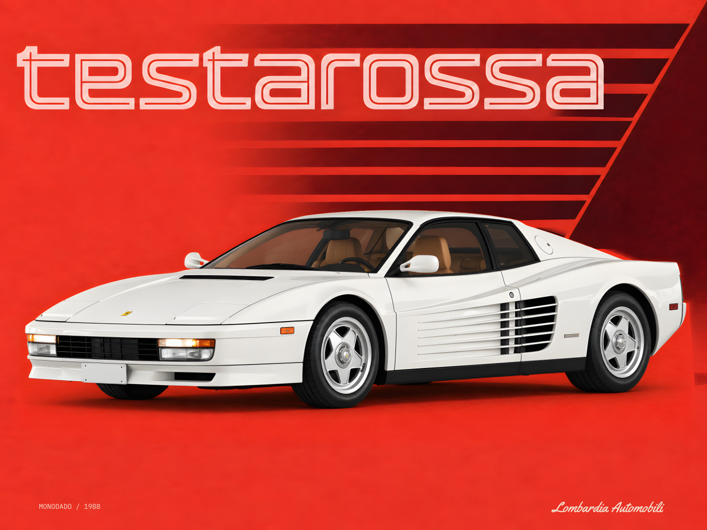

Ferrari Testarossa
- 1Sheet
- 2Judge
- 3Build
- 4Upload
- 5Submit
- 6Review
- 7Approved
- 8History
- 9Live
01 · The sheet

02 · Artwork details


03 · The lot, in order
04 · Photographs
Listing
Listing and complete lot details
You’re bidding on a 80 × 60 cm FORMA / MOTION poster by Lombardia Automobili, featuring the 1988 Ferrari Testarossa Monodado. The artwork is 100% unique combination of a detailed illustration of the car and our own layout and typography. A white frame and Perspex glazing are included; poster and frame are shipped together with care.
Vermilion, warm white and oversized outlined Testarossa typography give the artwork presence across a room. The white Testarossa and its technical details invite a closer look. Above a desk or in a garage lounge, it’s a conversation piece for anyone who knows what that name means.
Lombardia Automobili is an independent automotive design house. This artwork is limited to 100 physical prints in total across all sizes, colour variants, framing options and sales channels. FORMA / MOTION is made for people who appreciate the design of a car as much as the way it drives.
The subject is the 1988 Testarossa Monodado, with low-mounted twin mirrors and single-nut wheels. Its twelve-cylinder engine, wide rear bodywork and horizontal side strakes made it a defining Ferrari. The Monodado combines the later mirror arrangement with the early centre-lock wheel design.
Sheet size: 80 × 60 cm. Nominal assembled frame dimensions: 83 × 63 cm. This is a contemporary, retro-inspired studio edition.
An independent artwork by Lombardia Automobili, not affiliated with or endorsed by Ferrari S.p.A.
All listing fields, value and shipping
Object
| type | Poster |
|---|---|
| category | Automobilia Art & Posters |
| auction | Automobilia Art & Posters - Weekly auction |
| language | English |
| category evidence | Current object-selection UI reads: Poster - in Automobilia Art & Posters. |
Images
| 1 | { "position": 1, "filename": "01-hero-white-wall-layered.jpg", "role": "Cover: framed white-wall hero", "cover": true, "warning": null } |
|---|---|
| 2 | { "position": 2, "filename": "02-01-hero-flat.jpg", "role": "Full flat artwork", "cover": false, "warning": null } |
| 3 | { "position": 3, "filename": "03-true-corner-tl.jpg", "role": "Top-left frame corner", "cover": false, "warning": null } |
| 4 | { "position": 4, "filename": "04-true-corner-bl.jpg", "role": "Bottom-left frame corner", "cover": false, "warning": null } |
| 5 | { "position": 5, "filename": "05-true-corner-br.jpg", "role": "Bottom-right frame corner", "cover": false, "warning": null } |
| 6 | { "position": 6, "filename": "06-true-corner-tr.jpg", "role": "Top-right frame corner", "cover": false, "warning": null } |
| 7 | { "position": 7, "filename": "07-03-specs-footer.jpg", "role": "Native specifications/footer crop", "cover": false, "warning": null } |
| 8 | { "position": 8, "filename": "08-05-header.jpg", "role": "Native header crop", "cover": false, "warning": null } |
| 9 | { "position": 9, "filename": "09-06-vehicle-detail.jpg", "role": "Native vehicle detail crop", "cover": false, "warning": null } |
Details
| era | 1900-2000 |
|---|---|
| manufacturer brand | { "selection": "Other", "custom": "Ferrari" } |
| poster title | Testarossa Monodado - FORMA / MOTION - 80 × 60 cm - Edition of 100 |
| estimated period | 1980s |
| condition | A (excellent - mint condition) |
| number of objects | 1 |
| height | 630 |
| height unit | mm |
| width | 830 |
| width unit | mm |
| autographed by a famous person | No |
| designer artist | { "selection": [ "Other" ], "custom": "Lombardia Automobili" } |
| subject | [ "Transport", "Graphic design", "Vintage", "Advertising", "Technology", "Illustrated", "Applied art", "Other" ] |
| subject other | Ferrari Testarossa Monodado, FORMA / MOTION, car design, limited edition, framed |
| country of origin | Italy |
| specific region of origin | Blank |
| reference label colour | Blank |
| reference label | Testarossa Monodado 80x60 |
| description | You’re bidding on a 80 × 60 cm FORMA / MOTION poster by Lombardia Automobili, featuring the 1988 Ferrari Testarossa Monodado. The artwork is 100% unique combination of a detailed illustration of the car and our own layout and typography. A white frame and Perspex glazing are included; poster and frame are shipped together with care. Vermilion, warm white and oversized outlined Testarossa typography give the artwork presence across a room. The white Testarossa and its technical details invite a closer look. Above a desk or in a garage lounge, it’s a conversation piece for anyone who knows what that name means. Lombardia Automobili is an independent automotive design house. This artwork is limited to 100 physical prints in total across all sizes, colour variants, framing options and sales channels. FORMA / MOTION is made for people who appreciate the design of a car as much as the way it drives. The subject is the 1988 Testarossa Monodado, with low-mounted twin mirrors and single-nut wheels. Its twelve-cylinder engine, wide rear bodywork and horizontal side strakes made it a defining Ferrari. The Monodado combines the later mirror arrangement with the early centre-lock wheel design. Sheet size: 80 × 60 cm. Nominal assembled frame dimensions: 83 × 63 cm. This is a contemporary, retro-inspired studio edition. An independent artwork by Lombardia Automobili, not affiliated with or endorsed by Ferrari S.p.A. |
| generated title | Lombardia Automobili - Ferrari - Testarossa Monodado - FORMA / MOTION - 80 × 60 cm - Edition of 100 - 1980s |
Value
| currency | EUR |
|---|---|
| estimated value | 275 |
| reserve enabled | False |
| reserve value | Not set |
| buy now enabled | False |
| buy now value | Not set |
Shipping
| preset | 50usd |
|---|---|
| display currency | EUR |
| update preset if changes are made | True |
| package size | Large package |
| package display max weight | up to 20 kg |
| package display max dimensions cm | 100x50x50 |
| custom package | False |
| exact package weight | Not set |
| exact package dimensions | Not set |
| free shipping | False |
| rates | [ { "destination": "Denmark", "amount": 50, "currency": "EUR" }, { "destination": "Italy", "amount": 50, "currency": "EUR" }, { "destination": "The Netherlands", "amount": 50, "currency": "EUR" }, { "destination": "France", "amount": 50, "currency": "EUR" }, { "destination": "Belgium", "amount": 50, "currency": "EUR" }, { "destination": "Germany", "amount": 50, "currency": "EUR" }, { "destination": "Spain", "amount": 50, "currency": "EUR" }, { "destination": "United Kingdom", "amount": 50, "currency": "EUR" }, { "destination": "Portugal", "amount": 50, "currency": "EUR" }, { "destination": "Austria", "amount": 50, "currency": "EUR" }, { "destination": "Romania", "amount": 50, "currency": "EUR" }, { "destination": "Poland", "amount": 50, "currency": "EUR" }, { "destination": "Switzerland", "amount": 50, "currency": "EUR" }, { "destination": "Greece", "amount": 50, "currency": "EUR" }, { "destination": "Sweden", "amount": 50, "currency": "EUR" }, { "destination": "Hungary", "amount": 50, "currency": "EUR" }, { "destination": "United States", "amount": 50, "currency": "EUR" }, { "destination": "Rest of European Union", "amount": 50, "currency": "EUR" }, { "destination": "Rest of world", "amount": 50, "currency": "EUR" } ] |
| free pickup | False |
| combined shipping | False |
Expert
| name | Evan Lacey |
|---|---|
| specialism | Expert in Automobilia Art & Posters |
| message | Blank |
Product
| sheet cm | { "width": 80, "height": 60 } |
|---|---|
| nominal assembled frame cm | { "width": 83, "height": 63 } |
| orientation | landscape |
| frame colour | white |
| glazing | Perspex |
| edition | Edition of 100 |
| collection | FORMA / MOTION |
| car | 1988 Ferrari Testarossa Monodado |
Empty strings are observed blank UI values. Null inactive value fields were not set; no hidden value is asserted.
Print downloads and complete archive ↗
The nine-photo set is shown above. Enhanced print previews are separate; existing photographs were prepared from the original approved artwork.
Enhanced print review
Enhanced raster 4× · vector layers preserved · For owner review.
Edition of 100 · This artwork is limited to 100 physical prints in total across all sizes, colour variants, framing options and sales channels.

Enhanced print downloads and current copy ↗
Additional derivative review. Original artwork approval remains unchanged; all print variants share the artwork edition.
05 · History
5
- 2026-09-12Matching production JPG/PDF, white-frame hero, four frame-corner visualizations, exact native crops and six-paragraph listing prepared under the one-command approval contract.
- 2026-09-11Owner continued lot production from the exact current corrected hero; final detail views requested wider.
- 2026-09-11The car recreated to correct the mirror and interior; the poster design retained. Corrected artwork prepared for fresh owner approval; prior sources retained.
- 2026-09-11revival10-r3: revised hero prepared for fresh approval; previous sources retained.
- 2026-09-10Complete native illustration with separate vector typography prepared for artwork review.